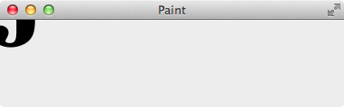
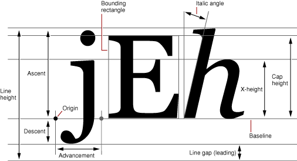
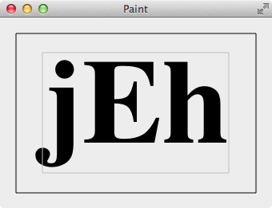
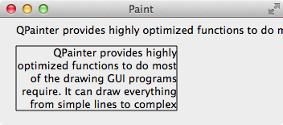
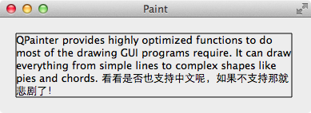

绘制文本非常常见，QPushButton，QLabel，QTableView 等等都得用，看似简单，其实里面有很多的学问，要掌握好还是挺不容易的。
简单绘制文本
文本的绘制有两种方式：
在指定位置绘制文本，不会自动换行
1
2void QPainter::drawText(int x, int y, const QString &text)
void QPainter::drawText(const QPoint &position, const QString &text)在指定的矩形内绘制文本，设置 flags 能够实现自动换行，对齐等
1
2
3
4void QPainter::drawText(const QRect& rectangle,
int flags,
const QString &text,
QRect *boundingRect = 0)flags为下面的值之一或则为对其取或的结果，例如靠上剧中 Qt::AlignTop | Qt::AlignHCenter:- Qt::AlignLeft
- Qt::AlignRight
- Qt::AlignHCenter
- Qt::AlignJustify
- Qt::AlignTop
- Qt::AlignBottom
- Qt::AlignVCenter
- Qt::AlignCenter
- Qt::TextDontClip
- Qt::TextSingleLine
- Qt::TextExpandTabs
- Qt::TextShowMnemonic
- Qt::TextWordWrap
- Qt::TextIncludeTrailingSpaces
下面先从最简单任务开始：在 widget 的左上角（0, 0）处绘制字符串 jEh。
1 | void MainWidget::paintEvent(QPaintEvent *) { |

…… 出师不利，本以为是很简单的一件事，那还不手到擒来么，不曾想结果却让人大跌眼镜，只显示出了 j 的小尾巴。如果把 y 的值设置大一些，如 150，则就可以完全显示出来了。但是，y 要多大才合适？不能一点一点的试吧，否则字体变了，y 的值又不合适了，完全不科学，这要如何是好？
FontMetrics
相信大多数人和我一样，刚开始的时候都认为 drawText() 的 x, y 是字符串左上角的坐标，其实不然，它是字符串的第一个字符的 origin 的坐标，y 是字体的 base line 的 y 坐标，什么是 origin，base line? 看完下图基本上就明白了：

文本是基于 base line 绘制的，而不是文本的左上角，所以上面的文本显示不全就很好理解了。
还是原来的问题，从 widget 的左上角开始绘制文本，那么 y 就应该和 ascent 一样大，但是怎么得到 ascent 的值呢？难到需要我们记住每种字体的 ascent 的值吗？这也是一种方法，如果愿意，未尝不可，但是，脑子够用么，幸好 QFontMetrics 就能够给我们提供字体的信息，提供了很多函数，如取得 line height 用 height()，用 width() 计算字符串的宽度，ascent(), descent(), xHeight() 等, 函数的名字已经很好的表明它的作用，在此就不再一一介绍，更多的函数请参考 Qt 的帮助文档。所以为了达到我们的目的，只需要把 y = 0 修改为 int y = metrics.ascent() 就可以了：
1 | void MainWidget::paintEvent(QPaintEvent *) { |
居中绘制文本
考虑一个问题，像下图这样，在一个矩形里居中显示字符串，应该怎么做呢？

有了 QFontMetrics，想必对大家来说问题已经不大，得到字符串的宽、高、ascent，简单的居中计算，就可以得到 origin 的坐标了。
1 | void MainWidget::paintEvent(QPaintEvent *) { |
把字体的包围矩形也画出来，这样就能很清晰的看到字符串的居中效果了。也许你还会问，这不是还有一点点没有居中吗？这个和字体有关系，换成等宽字体如 Menlo 后就可以看到确实是完全居中的，说明 QFontMetrics 得到的字体信息没问题，只是有的字体为了美观漂亮作了一些调整，对于这些字体如果要完全的居中效果的话，只好在使用上面的计算方式后再手动的微调一下就好了。
换行绘制文本
开始的时候说过，drawText() 绘制文本有两种方式，不会自动换行和在给定的矩形中自动换行，下面就举例说明，先绘制一行很长但不会自动换行的文本，然后在给定的矩形 QRect(20, 35, 200, 80) 里绘制会自动换行，向右靠齐的文本，效果如下图（发现超出矩形的字符不显示）：

1 | void MainWidget::paintEvent(QPaintEvent *) { |
文本的包围矩形
在给定的矩形里面绘制文本，超出的部分不显示，例如 QTableView 的 item 显示文本时就是这样的，文本超出了 item 的范围，就用 … 表示。例如开发一个聊天软件，也用这种方式绘制文本，消息太长时，超出了范围的部分就不显示，万一有两个异地恋人用这个软件聊天，异地恋是很敏感的，消息显示不全，有些话很有可能理解成相反的意思，可想而知会造成多少误会，而且自己还不知道为什么，都无从解释，如果因此而断送了一桩美好的姻缘，那是何等的罪过，显然这种显示文本的方式在这里是不适合的。观察 QQ 显示消息的样式，是由消息来决定显示的范围，有的很长，有的很短，而不是在固定大小的矩形内显示消息。
那么，怎么根据消息的大小来确定显示的范围呢（所谓的自适应）？
一般显示的宽度应该是确定的，关键是高度的计算，可以逐个字符的把他们的宽度加起来（不同的字体每个字符的宽度不一样），当大于显示的宽度就换行，高度也对应的加上一行的高度，这样就能计算出最终的高度了，也就知道了显示消息的矩形大小，使用这个方法就能自适应的显示消息了。
虽然我们已经知道了自适应显示消息的原理，但是如果是我们自己来计算实现，难度还是不小的，其实 Qt 已经给我们提供了相关的 API，使用 QFontMetrics::boundingRect() 可以计算出包围文本的矩形，然后在用上面的方法绘制文本就可以了，下面的程序，改变窗口的宽度，能动态的计算出显示文本所有内容的包围矩形，解决了上面提到的在给定的矩形中，文本太长时显示不全的问题：

1 | void MainWidget::paintEvent(QPaintEvent *) { |
metrics.boundingRect(QRect(0, 0, width, 0), flags, text)，第一个参数 rect 中最关键的是 width（显示文本的宽度），至于其中的 x, y 坐标和得到的 textBoundingRect 中的 x, y 是一样的，只是为了计算方便而已，height 没有什么意义，随便给个值就行，flags 和前面说过的 flags 一样。
QTableView 中没有显示完的字符串后面都会跟着一个 ...，这个怎么来的呢？不妨看看 QFontMetrics::elidedText()，一切就真像大白了。
elide: 省略